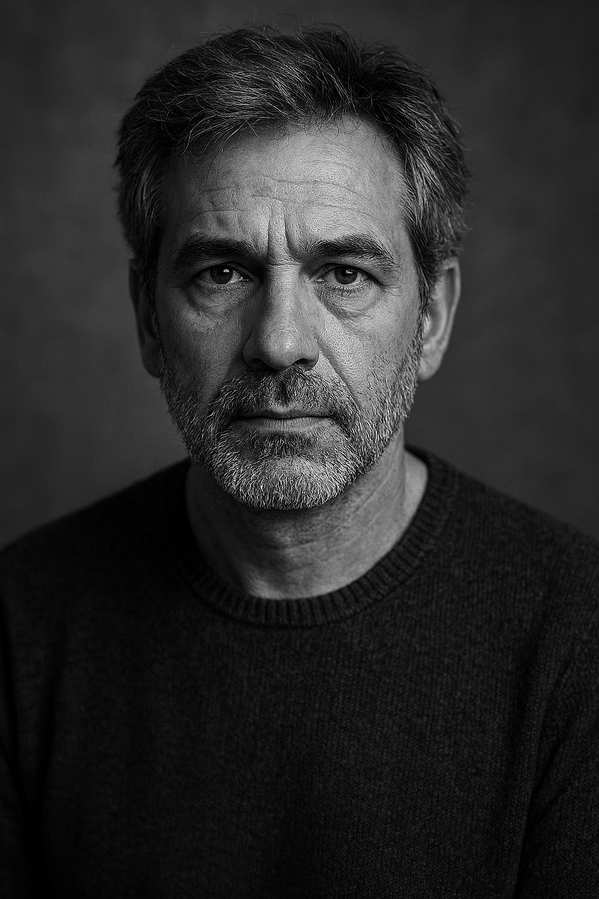

FRACTURE DE LUMIÉRE
Alex Vortex
L'exposition "Fracture de Lumière" explore la beauté née de la rupture. À travers une sélection d'œuvres contemporaines, elle transforme l'idée de cassure en une promesse de renaissance, où chaque faille devient une interstice par laquelle la lumière et de nouveaux sens peuvent émerger. C'est une invitation à porter un regard neuf sur la fragilité et la résilience.


“Une exposition sans précédent”
Stéphan LeBou
Home